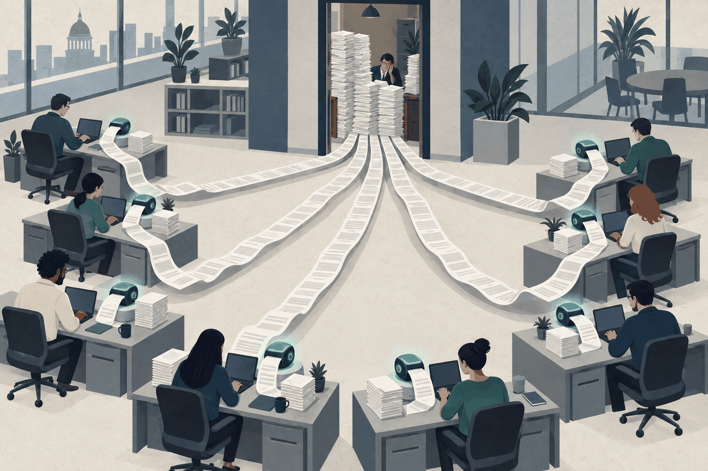
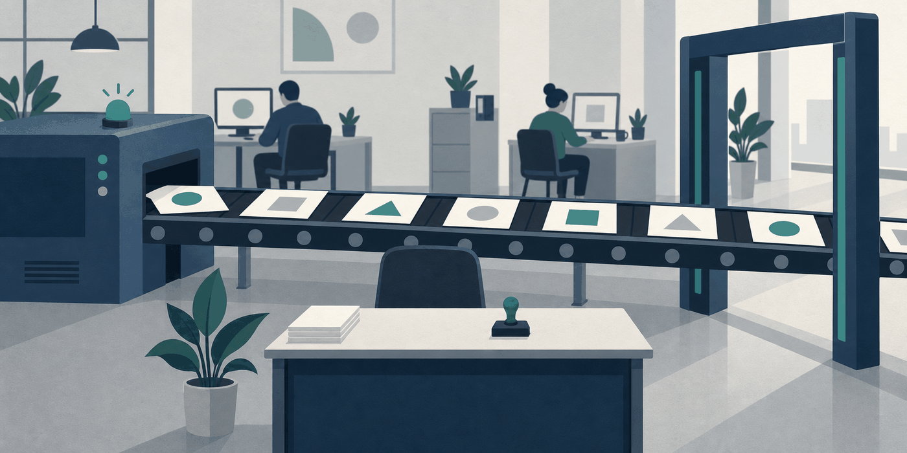
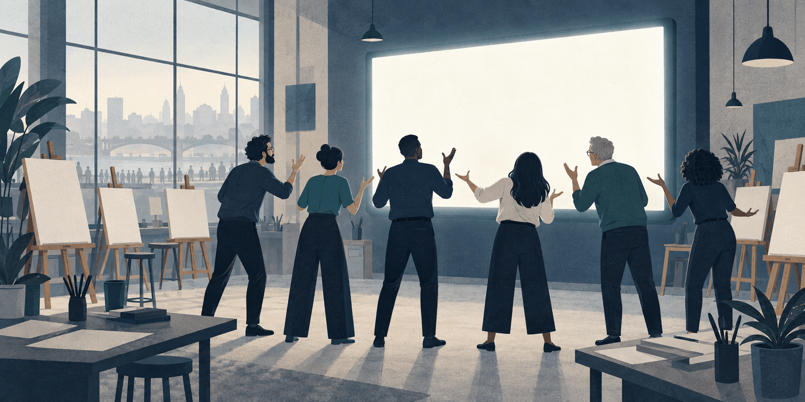
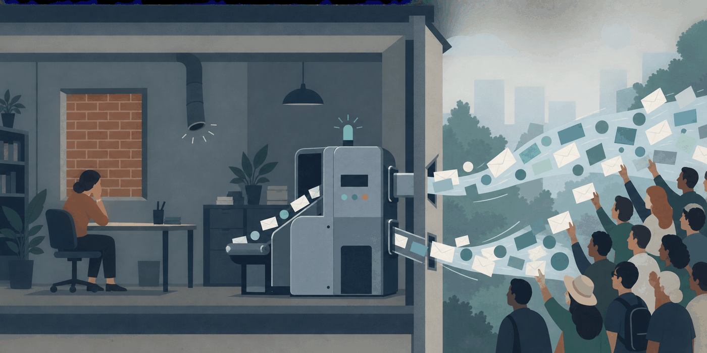

Activity Theory
This unit covers the six elements that make up any working system, why a contradiction between them is the engine rather than the fault, and how to use that to diagnose an AI adoption that is not working.
🎯 Learning objectives
| # | What you will be able to do | The real problem it lets you answer |
|---|---|---|
| 1 | Name the six elements of an activity system and say why the individual is not the unit of analysis | "The team has the tool and good people, so why is nothing faster?" — because the thing that determines output is the system, not the sum of the people. |
| 2 | Locate, for a real AI adoption, which element changed and which one nobody updated | "We gave the AI the drafting work and the team got slower." Something else in the system did not move with it. |
| 3 | Read a contradiction as a signal of what has to expand, rather than as a malfunction to be suppressed | Every organisation treats the friction after a tool arrives as a training problem. Engeström's claim is that it is the mechanism by which the system learns. |
| 4 | Extend the analysis to two interacting systems when the work crosses an organisational boundary | Your product team and your client's team each hold a different picture of the same object, and the design has to be negotiated between the two. |
🤖 Pre-class AI workout
Use an AI as your study partner before class. Paste the prompt below.
Engeström's Activity Theory describes human work as a six-element system: subject, object, tool, rules, community, and division of labor. Take one concrete case: a small newsroom introduces an AI agent that drafts every article summary. Fill in the six elements before the agent arrives, then fill them in again after. Then answer two questions. (1) Which element changed the most, and which one did nobody update? (2) Engeström argues that learning happens when contradictions between elements force the system to expand — name the specific contradiction this newsroom now has. Do not summarise the theory first. Fill in the table, then answer the two questions.
Bring your filled table. Compare the "element nobody updated" column with two classmates — that column is where most real AI adoption failures live, and you will find that people picked different elements for good reasons.
🔤 Vocabulary
Four words that this unit uses without stopping to explain them. The six elements themselves are defined in the table below, so they are not repeated here.
| Term | 中文 | In one line |
|---|---|---|
| CHAT | 文化歷史活動理論 | Cultural-Historical Activity Theory — the full name of the tradition this sits in, from Vygotsky through Leont'ev to Engeström |
| Mediation | 中介 | Nobody acts on the world directly; the tool sits between the person and the object and shapes what can be done |
| Contradiction | 矛盾 | Not an argument between people — two elements of the system now demand incompatible things |
| Expansive learning | 擴張式學習 | Learning something that does not yet exist, by building a new system rather than getting better at the old one |
A system here means elements plus the relations between them
"System" in this unit is not a piece of software and not an organisation chart. It is a small, drawable claim: these elements, these relations, one shared object.
Two consequences follow immediately. First, the boundary of a system is not the boundary of a company — it is drawn by asking who shares this object. The freelancer, the platform's algorithm and the intern all sit inside it if they are working on the same thing. Second, a system is specific: if you cannot put a real name or a real role in each of the six boxes, you are describing a category, not a system.
Draw one in five minutes, and check it with three questions
Take the work you are actually doing this semester and fill the six boxes. Then check it:
- Can you name a person for Subject, Community and Division of labour — not a department?
- Is the Object something the work aims at, rather than the thing it hands in?
- Does at least one Rule exist that nobody ever wrote down?
If the answer to the third is no, you have written the official version of the system, not the working one.
The unit of analysis is the system, not the person
Engeström's first move is a refusal: neither an individual action nor an individual person is a large enough unit to explain human work. The smallest thing that explains anything is the activity system — six elements held together. See activity system unit of analysis.
That refusal has a practical consequence for you. When a product does not get used, the interesting question is almost never about the user's motivation. It is about which element of their activity system your product failed to fit.
The six elements
The upper triangle is Vygotsky's original — subject, mediating tool, object. Engeström (1987) added the lower three, which are the social structure the work sits inside. See Engeström activity system triangle.
| Element | What it is |
|---|---|
| Subject | The person or group doing the work |
| Tool / mediating artifact | What they work through: physical tools and symbolic ones |
| Object | What the activity is aimed at — the problem space, the motive |
| Community | Everyone who shares that same object |
| Rules | The norms, explicit and unspoken |
| Division of labor | How tasks, power, and rewards are distributed |
The outcome sits outside the object: it is what the activity finally produces, and it is not the same thing as what the activity was aimed at.
The PM is the person who keeps the six consistent
Nobody's job description says "keep these six aligned". That is what a product manager actually does, and it is why the role is hard to describe in a job ad.
An agent changes the tool overnight, and the rules never
When an AI agent arrives, the tool element changes in an afternoon. Who is allowed to ship what, who reviews whose output, what counts as done — those are rules and division of labor, and they change only when a human decides to change them.
The gap between the two is where most AI-adoption pain sits.
A contradiction is the engine, not the fault
This is the part that is easy to nod at and hard to actually use. Engeström's claim is that contradictions between elements are not malfunctions to be trained away. They are what forces the system to expand into a new form. The expansive learning cycle names the seven steps that expansion runs through: questioning the existing practice, analysing where the conflict came from historically and empirically, modelling a new solution, examining the model, implementing it, reflecting, and consolidating the new practice. See expansive learning cycle and expansive learning.
For a PM the operational version is short: when adoption stalls, do not ask who needs more training. Ask which two elements now disagree.
Work through the four cases below before you read on. In every one the tool changed on day one — click the element that nobody changed with it. If you get one wrong, look at which element you clicked instead: that is the element you are personally most likely to forget when you plan a product.
Four rooms where the tool arrived and nothing else moved

Room one. Eight fast lanes, one slow gate.
Room two. The belt runs, the desk is empty, the gate is open.
Room three. Everyone has turned around.
Room four. The letters still arrive, and nobody inside hears them.Training changes the subject. If the contradiction is between the tool and the division of labor, changing the subject cannot resolve it — you will produce better-trained people queuing at the same bottleneck. Locate the contradiction first; the fix follows from where it is.
How contradictions appear: four levels
Engeström (1987) separates four kinds. They are not four degrees of severity — they are four different places a clash can sit, and each one needs a different move.
| Level | Where the clash sits | The move that resolves it |
|---|---|---|
| Primary | Inside one element | Decide which value that element serves; you cannot have both |
| Secondary | Between two elements | Move the element that did not move |
| Tertiary | Between the old activity and a new model dropped on top of it | Rebuild the week, not the announcement |
| Quaternary | Between your activity and a neighbouring one | Negotiate a shared object, or accept two products |
Everything below is one worked example of each, from product teams and newsrooms.
Primary｜the CMS is a craft tool and a scoreboard at the same time
The newsroom CMS is introduced as the thing that makes good journalism faster. The same system also generates the pageview report that ranks reporters at the monthly meeting.
Nobody assigned it two jobs; it accumulated them. The argument about "the CMS" never ends because two people defending different values are using the same word.
What breaks first: any change to the tool gets read as a change to the ranking. A feature that helps the craft but makes the numbers less flattering will be resisted by people who cannot say why.
Secondary｜the summariser arrived, the sign-off rule did not
An AI summariser is switched on for every article and drafting time drops by half. The rule that a section editor signs off every published line does not change, because nobody owns that rule.
Output now arrives twice as fast at a desk with the same number of hours in it. The queue is the contradiction made visible.
What breaks first: the bottleneck moves to the editor and everyone concludes the AI "did not really help". The tool did what it promised; the PRD never touched the permission that governs publishing.
Tertiary｜digital first, on a week still shaped by the print deadline
Management announces a digital-first newsroom: publish continuously, follow the audience. The daily meeting still happens when the page used to close, and the week still peaks where the print run used to.
The new model is real and so is the old rhythm underneath it. Staff are being asked to hold two objects at once.
What breaks first: people do the new thing in the gaps left by the old thing, so digital work looks like extra work rather than the work. This is the one that gets misdiagnosed as resistance to change.
Quaternary｜the platform team and the investigations desk want different things from one CMS
The product team's object is a platform any desk can use. The investigations desk's object is one long story that needs a layout nobody else will ever need. Both are behaving reasonably; the roadmap meeting still ends badly.
Two neighbouring activity systems meet over a shared artefact. Neither one is wrong internally, which is why arguing inside either system cannot settle it.
What breaks first: the special layout gets built as a one-off and then nobody maintains it — the product team never took it into their object, so it has no owner after launch.
Complaints are how contradictions reach you
You will rarely be told "we have a secondary contradiction". You will be told something is annoying. The table maps the sentence you actually hear onto the place the clash sits.
| What you hear | Where the clash usually is |
|---|---|
| "The tool is fine, people just do not use it" | Secondary — the rule or the division of labor never moved |
| "We keep having the same argument every quarter" | Primary — one element serves two values, so nothing settles it |
| "The new strategy is just more work on top" | Tertiary — the old activity is still running underneath |
| "Those guys are impossible to work with" | Quaternary — a neighbouring system with a different object |
| "We need more training" | Usually none of the above; it is the prescription people reach for when they have not located the clash |
Use the quiz below before you trust your own first answer on any of these.
Work through the six situations. Each one is a real shape you will meet in a newsroom or a product team; pick the level, then read why.
Two systems meet when they work on the same thing
Third-generation activity theory takes the unit of analysis one step further, to two interacting systems. The reason is practical: design, journalism and platform work all cross organisational lines, and what finally gets built is negotiated between two sides that each hold their own version of the object.
The theory names three versions, and the numbering matters:
- Object 1 — the raw thing out there, before anyone interprets it
- Object 2 — what each system makes of it internally, which is usually different on each side
- Object 3 — the jointly constructed object, the one that actually gets designed
Worked example: who anime is actually made for
The case is Anime Revenue Structure and Isekai Saturation, and it is a clean two-system problem.
System A, the production side. Subject: the production committee and studio. Object: a series worth making. Rules: what a greenlight meeting accepts. Community: creators, broadcasters, licensors.
System B, the overseas platform. Subject: a streaming service buying distribution rights. Object: subscriber acquisition and retention in its own market. Rules: what its acquisition team can justify paying before anything exists.
Object 3, the one that gets built. Neither "a series worth making" nor "subscribers in North America" is what actually gets designed. What gets designed is a project that can command a high minimum guarantee before broadcast — an object neither side holds alone, constructed between them.
Then the interesting part. Once object 3 stabilises, it rewrites System A's own rules: the greenlight question shifts from what domestic audiences will like to what an overseas distributor will pay for in advance. A quaternary contradiction between two systems has turned into a secondary contradiction inside one of them, between the new rule and the community that used to set it.
The figures in the source — roughly 90% of late-night anime revenue depending on overseas platforms, an average of about ¥350M per 12–13 episode season — are an industry insider's assertion in a trade essay, published while promoting his own book. No sample definition, no year, no source is given. Use the mechanism, treat the magnitudes as unverified, and notice that the argument still works without them.
The same shape, one floor down
You do not need an international case to see this. The platform team and the investigations desk from the quaternary example above are two systems too: one holds "a platform any desk can use", the other holds "this story, published properly". The special layout that gets built is object 3, and it fails after launch for the ordinary reason — object 3 was built, but neither system took it into its own division of labour.
This is where the document comes in
If two systems each hold their own picture of the object, something has to travel between them and stay coherent while meaning different things to each. That is a boundary object, and it is the theory behind the MRD in W7 and the PRD in W11. Activity Theory tells you why the document is needed; Boundary Object Theory tells you what makes one work.
A tool changes what a team can do in an afternoon. It changes who is allowed to decide only when somebody rewrites the rule — and until somebody does, the team is running a system whose elements no longer agree with each other.
Your product is a tool dropping into somebody else's system
Everything above described your own team. Now turn it around, because this is the part that changes how you plan a product.
Whatever you build this semester will arrive in somebody else's activity system as a new tool. Your users already have an object they are aiming at, rules they work under, a community they answer to, and a division of labor they did not choose. Your product does not enter an empty space. It lands on a vertex.
That is why "the users did not adopt it" is almost never a motivation problem. The product asked one element to change and left the other five where they were.
Adoption fails at the element you did not ask about
| What you shipped | What you implicitly asked to change | Who had to agree, and usually did not |
|---|---|---|
| A faster CMS for reporters | The rule about who signs off before publication | The editor whose authority is that sign-off |
| An AI summary tool for a news app | The reader's object — they came to be informed, not to be finished quickly | Nobody; the object mismatch surfaces as low retention |
| A shared analytics dashboard | The division of labor between editorial and audience teams | Both teams, neither of whom was in the room |
| A student-organisation scheduling app | The unwritten rule that the president decides in the group chat | The president, whose informal power the app removes |
Read the middle column again. In each row the pitch was about the tool, and the fight was about a rule or a division of labor.
The six elements land in specific sections of your MRD and PRD
This is the operational payoff. Each vertex of the triangle already has a home in the two documents this course makes you write — which means you can use the triangle as a completeness check rather than as a diagram.
| Element | Where it lives in your documents | The question that section has to answer |
|---|---|---|
| Subject | MRD — persona and target segment | Who exactly is doing this work, in what conditions? |
| Object | MRD — problem statement and positioning | What are they actually aiming at, as opposed to what they click? |
| Tool | PRD — features and acceptance criteria | What does our product let them do that they could not do before? |
| Rules | PRD — permissions, workflow states, edge cases | Whose approval does our flow assume, and does that person exist? |
| Community | MRD — stakeholder map and journey | Who else shares this object and can veto adoption? |
| Division of labor | PRD — roles and the RACI behind the flow | Who does what after we ship, and who loses work they used to own? |
An MRD that fills the top three and leaves the bottom three empty is the document that produces a well-received demo and no adoption.
Three questions to put into the pitch itself
- Which element of the user's system are we changing, and which one has to change with it?
- Who currently owns the work our product removes, and what do they get instead?
- What is the first contradiction we expect after launch, and what would we do when it shows up?
The third one is the one judges remember, because most teams present a product with no predicted friction at all — and a system with no contradiction is a system nobody has actually looked at.
⚠️ Common misconceptions
| What students assume | Why it is wrong | What to do instead |
|---|---|---|
| "It is just a diagram of a team" | Its actual claim is about contradictions between elements driving change. Without that it is an org chart with more boxes | Use it to find the element nobody updated |
| "Object means the product" | Object is what the activity is aimed at — the motive and problem space. The product is closer to the outcome | Ask what the work is for, not what it produces |
| "A contradiction means something is broken" | Engeström's claim is the reverse: it is the engine of expansive learning | Ask what the contradiction is forcing the system to become |
| "Rules means the written policy" | Rules include the unspoken ones, which are usually the binding ones | Ask what would get someone quietly disapproved of |
| "Adding AI is a tool upgrade" | It almost always rewrites rules and division of labor too, and those do not change by themselves | Design the rule change in the same sprint as the tool |
| "This is an organisational theory, not a product one" | Every product you ship is a tool entering somebody else's activity system; adoption is decided by the five elements you did not design | Use the triangle as a completeness check on the MRD and PRD |
| "If the product is good enough, adoption follows" | Adoption requires a rule or a division of labor to move, and those move only when a person with authority moves them | Name that person in the stakeholder map before you build |
🔗 Links
-
Every term used here has its own card: Glossary — one line each, in English and Chinese.
-
Where it is used first: PM Role and Product Lifecycle — the PM as the person who keeps the six elements consistent across the lifecycle.
- Where it returns: W11 PRD Writing and Stress Test (the PRD as codified rules) and W12 Scope Management and Prioritisation.
- The theory primer with readings and lens questions: Activity Theory. The two supporting frames for W1: Human-AI Teaming, Distributed Cognition.
- Concept cards: Engeström activity system triangle, activity system unit of analysis, expansive learning cycle, expansive learning, two interacting activity systems as minimal unit of analysis.
- Scholar note: Engeström, Yrjö.
In short
- The unit that explains work is the six-element system, not the person — so when something does not get used, look for the element nobody updated rather than for a training gap.
- A contradiction between two elements is the engine of change, not a fault to be suppressed; the useful question is what it is forcing the system to become.
- Every product you plan is a new tool landing in somebody else's system, which is why the triangle doubles as a completeness check on your MRD and PRD.
💬 Discussion and reflection
Pair review ›
The situation. Your department rolled out an app for group assignments at the start of this semester.
- What it does. One member creates tasks and assigns each one to a named person. A shared board shows who has finished what and who is late. The board is also visible to the course TA, who opens it at the end of term when there is a dispute about who did the work.
- What it replaced. Before it existed, groups divided work in the chat: someone volunteered, jobs got swapped mid-week when another deadline hit, and if a person went quiet the group leader chased them privately.
- How it is enforced. Using it is not graded. The department "strongly encourages" it; two courses have made it compulsory.
- Three weeks in. In most groups the real coordination has gone back to the chat. The app gets opened once a week, the night before the deadline, to tick things as done.
- The compulsory two. Those groups do fill it in. They create a single task called "報告", assign it to the group leader, and add nothing else.
Work through it in pairs.
- Fill the six elements for a student group before the app and after. For Rules and Division of labour, quote the sentence above you are basing it on
- Name the contradiction in the form "X now disagrees with Y" — two elements, and "people are lazy" is not one of them
- The compulsory groups produce one fake task rather than nothing. Say what that workaround tells you about which element they are protecting
- Write the question the product team should have put to a real student group before building — as a question, in the words you would actually say
If you filled a table before class, run yours second and compare which element you each left unchanged.
情境：系上這學期開學時推出了一個分組作業 app。
- 它做什麼：由一位組員建立任務，每一項指派給一個具名的人。看板上全組看得到誰完成了什麼、誰逾期。這塊看板助教也看得到，期末如果有人對「誰做了事」有爭議，助教會打開它。
- 它取代了什麼：在這之前，分工是在群組聊天裡喬的——有人自願接、遇到別科死線就中途換工、有人沒動靜由組長私下催。
- 強制程度：使用與否不計分。系上「強烈建議」，其中兩門課規定必用。
- 上線三週後：多數組別真正的協調已經回到聊天群。app 每週開一次，在死線前一晚打開，把事情勾成已完成。
- 那兩門必用的課：這些組別確實有填。他們建立一個叫「報告」的任務，指派給組長，然後就沒有別的了。
請兩人一組，照下面四步走：
- 填出一個學生小組在 app 出現之前與之後的六個元素。Rules 與 Division of labor 這兩格要引用上面讓你這樣填的那一句
- 把矛盾寫成「X 跟 Y 互相牴觸」——要指到兩個元素，「大家懶得用」不算一個元素
- 必用的那兩門課不是不填，是填一個假任務。說出這個變通做法透露了他們在保護哪一格
- 寫出產品團隊在動工之前應該去問學生小組的那一題——寫成問句，用你真的會講出口的話
課前有填過六元素表的，把自己的那份放第二輪跑，比對你們各自漏掉的是哪一格。
Individual reflection
Write one sentence to keep: "In my own team this semester, the element we are least likely to update alongside the tool is __, and the first symptom will be ____."
✍️ Take-home task
In no more than 200 words, take the product your team is planning this semester and answer three things: which element of the user's activity system your product changes, which element has to change alongside it, and who has the authority to change that second element. Name a person or a role, not a department. Bring it to W7 — it goes straight into the stakeholder section of your MRD.
Student view · updated 2026-09-12 16:09